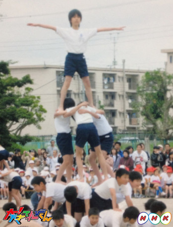
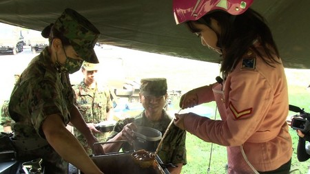
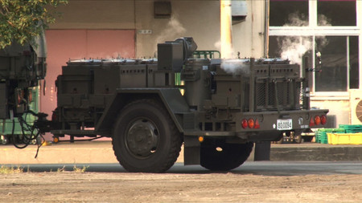
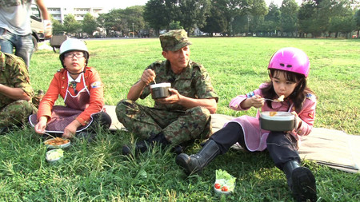
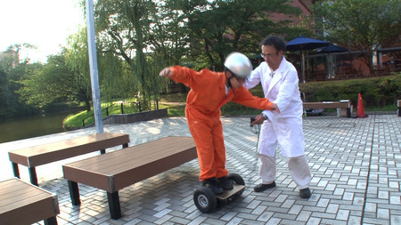
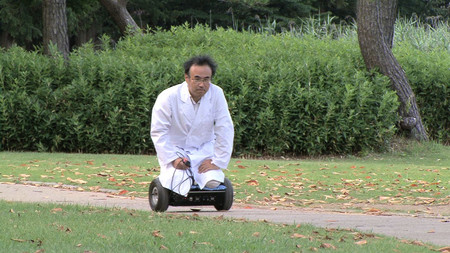
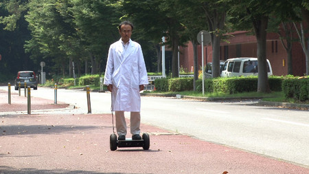
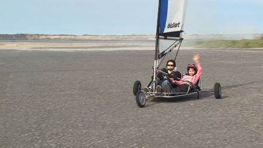
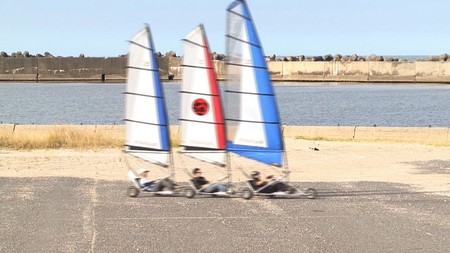

【運動会の思い出】浅賀玲音
どうも！れおです
今日は運動会の思い出
ということで...
小6の時の
運動会の思い出について
話させていただきます
小6の時の運動会で
1番思い出があるのが
組体操です！
組体操練習の日に
最後の1番大きな
タワーを作るときに
誰が1番上になるかという
話しになったとき、
じゃあ軽いから浅賀行け
的なノリになって
やってみたら...
ちゃんとできたんです！
それで、
本番も成功するかドキドキ
だったのですが...！
見事成功しましたあああ！
いやー！嬉しかった！
小学生として最後の運動会
の最高の思い出でした！

ではでは！
投稿者:浅賀玲音 | 投稿時間:18時00分 | カテゴリ：We are 大天才テレビジョン | 固定リンク


 " title="ソーシャルブックマークについて">
" title="ソーシャルブックマークについて">
※NHKサイトを離れます。
【乗りすけFile】 No.49：野外炊具１号（改）
乗りすけFile No.49：野外炊具１号（改）
（１０月１７日放送）



全長：4m59cm
全高：2m74cm
全幅：2m31cm
重量：約2500 kg
野外で調理するための陸上自衛隊の特殊車両「野外炊具１号（改）」。トラックに牽引されて移動する。
食事の調理が困難な被災地などで主に活躍。大型コンロ６台、万能調理器２台を搭載、約２００人分の主食・副食を約１時間で同時調理できる。
１台につき６名の隊員で作業、２０分で炊飯(蒸らし時間は別)が完了する。牽引走行中でも炊飯が可能だ。
これまでの【乗りすけFile】はこちら
投稿者:大天才テレビジョン社員１号 | 投稿時間:14時45分 | カテゴリ：乗りすけさん | 固定リンク
" title="ソーシャルブックマークについて">
※NHKサイトを離れます。
【乗りすけFile】 No.48：走る台車
乗りすけFile No.48：走る台車（１０月１０日放送）



全長：36cm
全高：60cm
全幅：55cm
重量：約12kg
定員：1名
体重移動で操縦する一人乗り台車。台車の四隅に装備された力センサーが、乗員の足の裏の力を感知する。後進も可能。最高速度は徒歩より早い５km/h。
バッテリーを２個内蔵し、充電１時間で２時間走行する。
最大搭載重量は１００kg。荷物を搭載し、リモコンで操縦することもできる。
最大１０度までの坂なら登ることも可能だ。
これまでの【乗りすけFile】はこちら
投稿者:大天才テレビジョン社員１号 | 投稿時間:14時44分 | カテゴリ：乗りすけさん | 固定リンク
" title="ソーシャルブックマークについて">
※NHKサイトを離れます。
【乗りすけFile】 No.47：ブローカート
乗りすけFile No.47：ブローカート（９月２６日放送）


全長：約2m80cm
全高：約1m70cm
全幅：約5m50cm
重量：約27kg
価格：約57万円〜
三輪の車両に帆を張り、風を受けて走行する「陸上のヨット」。
ハンドルと、帆の張り具合を調整するロープで操縦する。乗車姿勢は風の抵抗を軽減するため寝そべる体勢に近い。風向きを確認するために、操縦席には風向計を装備している。最高速度は風速によるが約６０km/h。ヨットと同様、ジグザグ走行で風上に進むことも可能である。
なお、コーナリング時に転倒することがあるが、金属製のフレームとシートベルトにより運転者の安全は確保されている。
これまでの【乗りすけFile】はこちら
投稿者:大天才テレビジョン社員１号 | 投稿時間:14時30分 | カテゴリ：乗りすけさん | 固定リンク
" title="ソーシャルブックマークについて">
※NHKサイトを離れます。